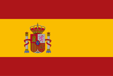
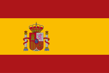

Mastering Vector Conversion for Flawless Embroidery
Vector conversion forms the backbone of premium embroidery digitizing services...
For intricate patch designs, our digitizers employ...
Our small text optimization techniques enable crisp...
 

Vector conversion forms the backbone of premium embroidery digitizing services...
For intricate patch designs, our digitizers employ...
Our small text optimization techniques enable crisp...